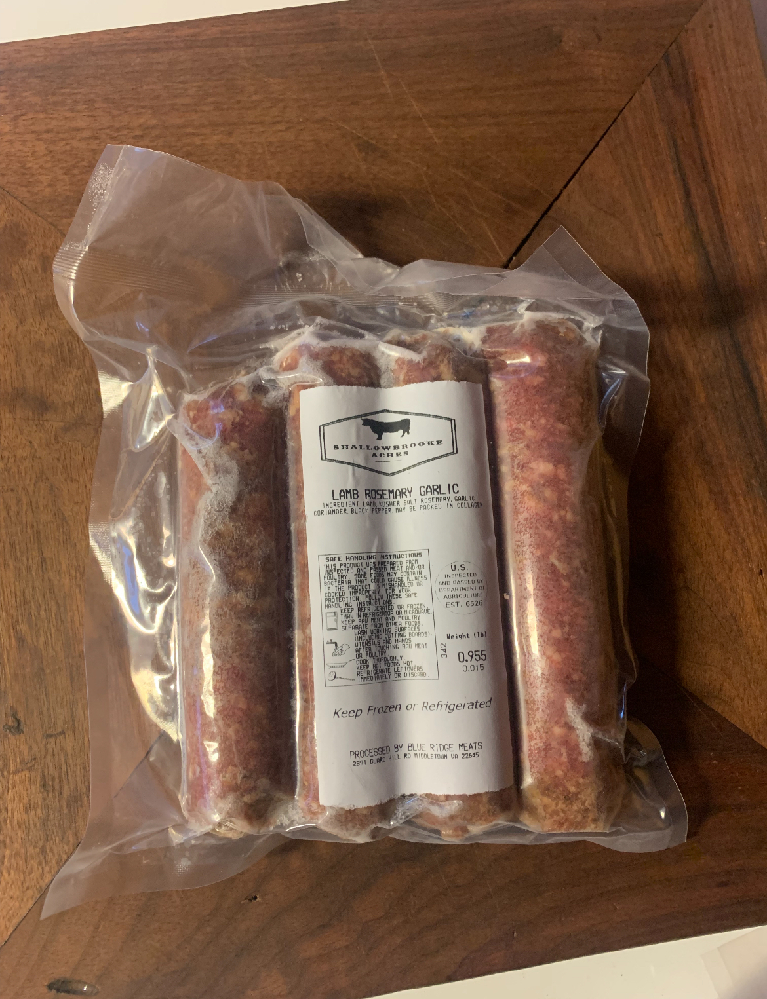

About Us
Welcome to Shallowbrooke Acres, a family-run farm in Clarke County, Virginia, dedicated to producing high-quality, all-natural products. We believe in sustainable farming, ethical practices, and bringing the freshest products directly to our local community. Our mission is to provide locally sourced meats, handcrafted skincare, and artisan candles that are both natural and sustainable.

Our Products
Farm-Fresh Meats
Great meals start with high-quality, responsibly raised meat. Our livestock is raised with care, ensuring natural, flavorful cuts that bring out the best in every dish. We offer a variety of farm-fresh beef, pork, and lamb, processed with attention to quality and freshness. Whether you’re looking for rich, marbled steaks, hearty roasts, or perfectly seasoned ground meats, you can count on us for premium cuts with no unnecessary additives—just real, honest food.


Bacon
We offer nitrate-free, cold-smoked bacon in regular, peppered, and ham steaks. A delicious addition to any meal, these bacons are packed with flavor and free from any added preservatives. Treat yourself to a bacon experience that’s as natural as it is tasty!

Custom Sausage
At Shallowbrooke Acres, we believe great sausage starts with quality ingredients and real craftsmanship—no fillers, no shortcuts, just fresh farm-raised meat and the perfect blend of seasonings. Whether you like it bold and spicy, rich and smoky, or classic and savory, we can tailor flavors to your taste. From traditional recipes to unique blends, every sausage is made with care to ensure the best flavor and texture. Special emphasis on lamb and pork varieties.


Beef Tallow Skincare
If cows had hands, they’d probably use this too. Beef tallow isn’t just for cooking—it’s also an ancient, natural skincare secret. We use the purest beef tallow to craft moisturizers, balms, and creams that nourish and hydrate your skin without any harsh chemicals. It’s packed with vitamins A, D, E, and K, which are known to help repair and rejuvenate the skin. It also has a similar composition to our skin’s natural oils, making it easily absorbed and incredibly effective for dry skin, chapped lips, or just giving your skin a little extra glow.


Soy Candles
Our long-lasting soy candles are naturally scented, creating a warm, cozy ambiance with every burn. Choose from a variety of scents and enjoy a touch of comfort wherever you are.

Homemade Apple Butter
Our Homemade Apple Butter is made from the finest, locally sourced apples, slow-cooked to perfection over an open fire, the way our ancestors did. This rich, smooth spread is a true customer favorite and a perfect complement to any meal.

Wholesale & Bulk Orders
Looking to stock your freezer with farm-fresh, locally raised meat? We offer whole, half, and quarter beef, as well as lamb, pork, and goat. All our meat is processed with care to ensure the best quality and flavor. Whether you’re feeding a family, stocking up for the season, or just want to know exactly where your food comes from, we’ve got you covered.
Why Order in Bulk?
- Better value per pound with high-quality meat at a lower cost.
- Custom butchering options to fit your needs.
- Locally raised, farm-fresh meat with no middlemen—just honest, high-quality cuts.
Place your order today and enjoy fresh, local meat straight from our farm to your table.